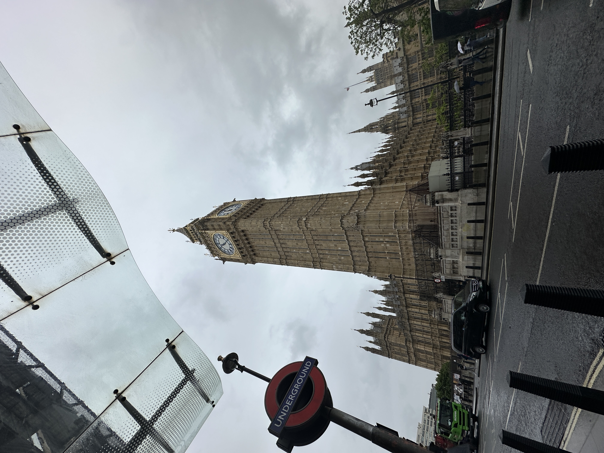
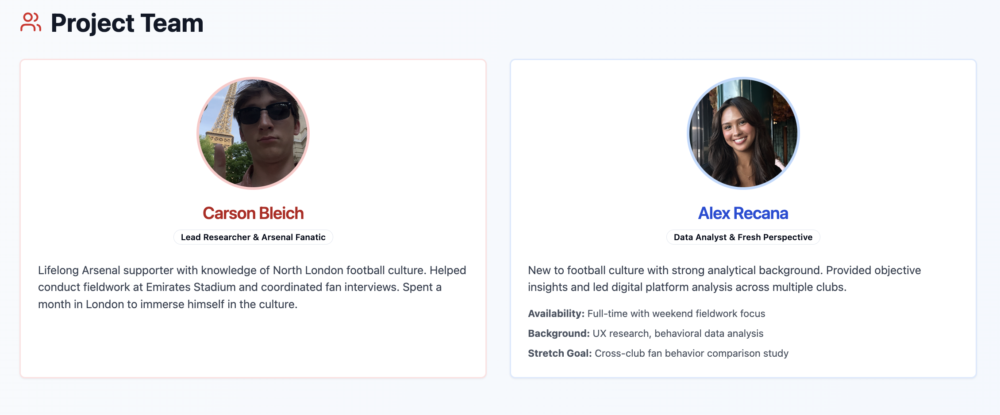
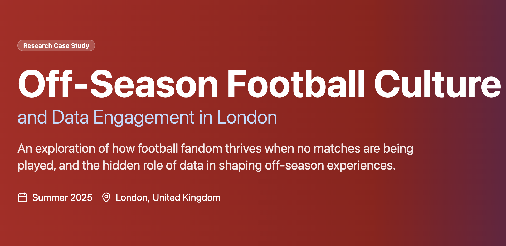

London Off-Season Football Tales
An interactive website exploring how London's football culture stays alive during the off-season — combining research and front-end design to tell a story about fan engagement, tourism, and digital platforms. Built with a partner during study abroad.
Context
In May 2025 I joined a study abroad program in London focused on Defamiliarization — the practice of looking at familiar things from a fresh angle. The course asked us to pick a slice of the city, research it, and tell its story through a medium of our choice. My partner and I picked football. Specifically: the months when no football is being played.
The off-season is usually treated as a gap. We wondered whether it was actually doing more cultural work than it got credit for — whether fans, pubs, and stadiums were still quietly keeping the sport alive in the city when no ball was being kicked.

Research
We spent the first weeks of the program walking the city and collecting material — pub visits, stadium tours, interviews with supporters, and a review of how clubs stay in touch with their fans in the off-months through digital channels.
What we found
- Pubs function as a year-round fan infrastructure, not a matchday one.
- Clubs invest heavily in off-season digital content — it's where the supporter relationship is maintained, not just reflected.
- Tourism and football fandom overlap more than we expected, especially around stadium tours and merchandise.
Design & build
We designed the site to feel closer to a long-form magazine piece than a report. Content is organized around who keeps football alive: fans, places, platforms. Each section combines writing, photography, and short interactive moments that let the visitor explore rather than just scroll.
My contributions
I paired with my teammate on layout, information architecture, and visual direction. I owned the majority of the HTML/CSS build, integrated the multimedia content, and handled the responsive behavior so it read well on phones — which is how most visitors actually found it during the program showcase.


Outcome
We presented the site at the program's final showcase. The stronger outcome, honestly, was personal: I came out of the project more confident in combining research and front-end, and more sure that the work I want to do sits somewhere between writing, designing, and building for the web.
Reflection
If I were running this back, I'd pick fewer sections and go deeper on each — we had more material than the scaffolding could hold. I'd also lean harder into a couple of the interactive moments instead of spreading them thin. Good practice for learning when to cut.